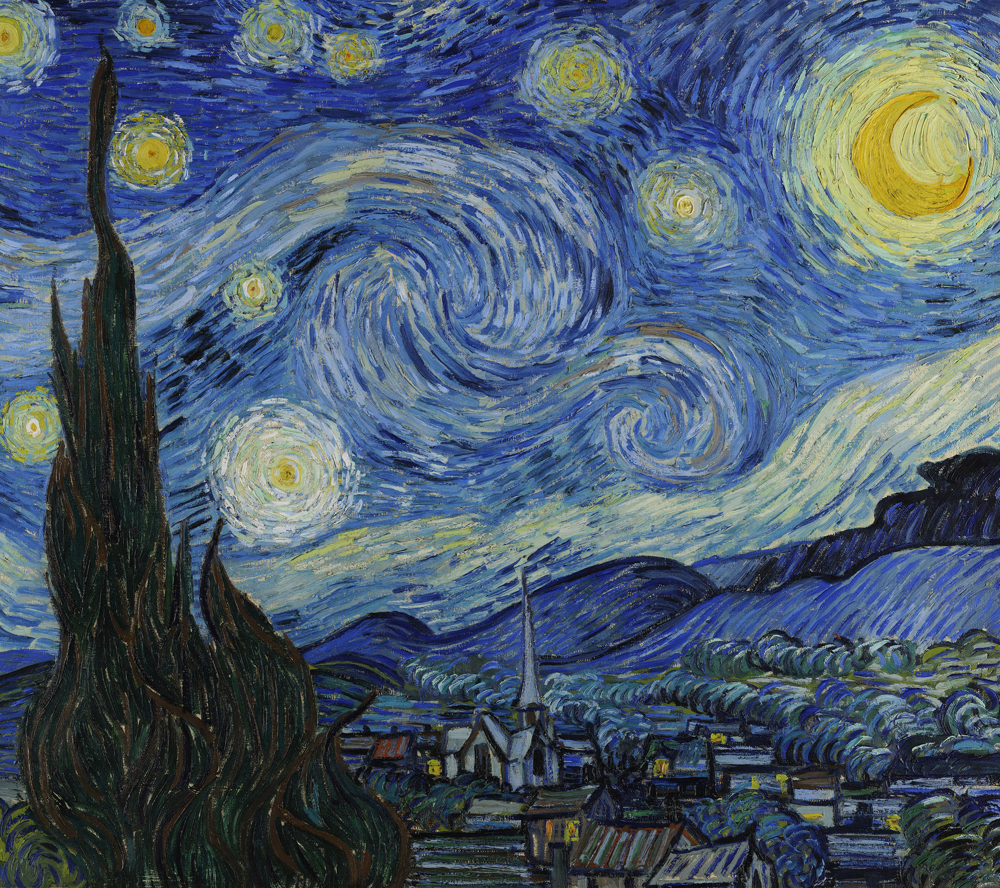

《星月夜》（The Starry Night）
简介：从构图上来说，该画面构图极为准确，画中以树木衬托天空，下部的房舍托起了无边的宇宙，以获得构图上微妙的平衡。
特别是那些柏树的线条画得流畅而别具一格，正如梵·高自己曾描写的那样：“那些柏树总是占据着我的思绪——从来没有人把它们画得像我看到它们的样子，这使我惊讶。柏树的线条和比例正如埃及金字塔及尖碑那么美丽——在晴朗的风景中的黑色飞溅。”
在绘画技法上，梵·高接受了前期印象派的某些特点，不是用简单的线和面来表达物体。而是用点来表现物体的光影，达到了传统画作无法达到的效果。同时，他又注重采用夸张和对比的方法，给光影添加动感。前景中以短促清晰的水平线笔触描绘出来的小镇，与画面上部呈主导趋势的曲线笔触，形成了强烈的对比。教堂的细长尖顶与地平线的交叉，柏树的顶端恰好拦腰穿过旋转横飞的星云，这一切都使画面产生出一种流动的感觉。
